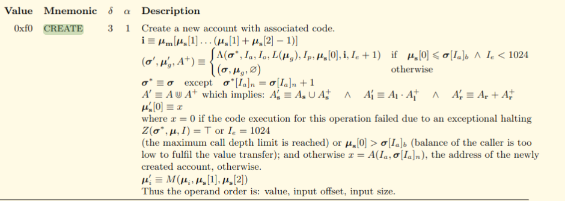

11-18-2019 0:00AM (ET)
In my last post I discussed the design of Arwen’s smart contracts. That description is now out of date. In the run up to the Arwen Ethereum launch we continued to evaluate our design and came to the conclusion that we should use the create2 call rather than the create call for smart contract address creation. Here I will discuss the problem and why we moved to create2.
At a high level the problem is this: Ethereum’s create call doesn’t guarantee that a smart contract address will not change if a reorg occurs. Thus setting up an escrow safely using create requires twice the number of block confirmations normally required for a transaction. We show how we fixed this in Arwen by using Ethereum’s create2.
tl;dr We deployed create2 in our Ethereum smart contracts before our Ethereum smart contract launched. Therefore the issues discussed in this blog entry have no impact on Arwen. These additional changes have been audited by Zerotrust.

In Ethereum when an smart contract, SC1, creates another smart contract, SC2, using create the address of SC2 is calculated as
SC2.Address = KECCAK(SC1.Address, SC1.nonce)
where SC1.nonce is the counter that increases by 1 each time SC1 creates a new contract address. Notice that the address of the new smart contract SC2 is completely independent of the code or parameters of SC2.
A Rake’s Progress: IV The Arrest by William Hogarth
To illustrate the problem consider the following scenario. There is a smart contract WalletContractMaker at address 0x1234 which is used to create smart contract-based multisig wallets.
Alice wants a new multisig wallet so she posts a transaction CreateAliceWalletTxn which calls the WalletContractMaker smart contract and tells it to create a smart contract AliceWalletContract controlled by Alice’s keys PK_Alice1 and PK_Alice2.
Eve also posts a transaction CreateEveWalletTxn which calls the WalletContractMaker smart contract and asks it to create a smart contract EveWalletContract controlled by Eve’s keys PK_Eve1 and PK_Eve2.
CreateEveWalletTxn is confirmed on Ethereums blockchain. The current nonce of WalletContractMaker is 1 so the address of Eve’s wallet is
0xABCD = KECCAK(WalletContractMaker=0x1234, 1)
CreateAliceEveTxn is confirmed on Ethereum’s blockchain. The current nonce of WalletContractMaker is now 2 so the address of AliceWalletContract is:
0x3456 = KECCAK(WalletContractMaker=0x1234, 2)
Alice receives an Ethereum event that AliceWalletContract has been created and that the address is 0x3456. She inspects the blockchain and confirms that the smart contract at 0x3456 is solely under the control of her two keys PK_Alice1 and PK_Alice2.
Foolishly Alice does not wait until AliceWalletContract is sufficiently confirmed and sends 100 ETH to her multisig wallet at address 0x3456.
A reorg occurs and now CreateAliceWalletTxn comes before CreateEveWalletTxn on the Ethereum blockchain. This means that the WalletContractMaker nonce is 1 instead of 2 when Alice’s wallet contract is corrected. Thus the address of AliceWalletContract changes from 0x3456 to 0xABCD.
This also means that Eve’s EveWalletContract is now 0x3456. Becasue Alice’s transaction to fund AliceWalletContract is sent to EveWalletContract Eve can steal Alice’s 100 ETH.
This problem is sometimes phrased as "Ethereum doesn’t provide safely under reorgs". To prevent this from happening Alice should not take any actions until a sufficient number of confirmations have occurred. That way it is very unlikely a reorg will give her smart contract address to another party.
This fix, while safe, makes the user wait longer. Consider the case of setting up an Arwen escrow. Assume that a reorg of N confirmations is very unlikely. Alice must post a transaction to create her escrow then wait for N-confirmations. Then she must come back on online and fund her escrow. After another N-confirmations her escrow will be able to be used for trading. That is, safely using this pattern requires two times the number of confirmations as just sending a transaction. Furthermore the it requires that the user come back online a second time. We decided that Arwen should not make users do this.
The Create2 call gives us the tools to safely confirm the funding transaction at the same time or even before the transaction which creates the smart contract. To understand how we need to look at how Create2 generates a smart contract address.
If a smart contract SC1 creates a smart contract SC2 using Create2 the address of SC2 will be calculated as:
SC2.address = KECCAK(0xff, SC1.address, salt, KECCAK(SC2.init_code))
This has a number of advantages. First, the address depends on the init_code so that smart contracts with different constructor code will have different addresses. Second, unlike create the address doesn’t use a nonce thus reorgs will not change the address.
However out of the box create2 doesn’t completely solve our problem. This is because while the constructor of the new smart contract can’t be changed without changing the address, the parameters to the smart contract can be changed. For instance Contract(owner=Alice) and Contract(owner=Eve) both use the same constructor/init_code, namely Contract(). Thus, we need to ensure that the address commits to both the parameters passed to the constructor as well as constructor itself. To commit to the constructor parameters we just calculate the salt as the parameters i.e. salt = KECCAK(param1, param2, ...).
Thus in Arwen we calculate the address of an escrow as:
salt = KECCAK(factory.address, escrowAmount, timelock, escrowerReserve, escrowerTrade, escrowerRefund, payeeReserve,payeeTrade)
KECCAK(0xff, factory.address, salt, KECCAK(SC2.init_code))
This allows Alice to fund her escrow before she even posts her create escrow transaction. This property is typically discussed with the context of "counterfactual instantiation". This allows us to change the design of Arwen Ethereum escrows so that rather than "create-then-fund} we have "fund-than-create". That is, Alice determines what the address of her escrow will be, she funds it and then posts the transaction that creates the smart contract for her escrow.
Note that there are conditions under which create2 would not be safe. For instance a constructor can be designed to have behavior which is dictated by other data on blockchain. If a smart contract created from create2 at an address that was self-destructed and then created again the smart contract at that address could change. This doesn’t impact Arwen’s ETH escrows. When we moved to create2 we removed self-destruct from our contract.